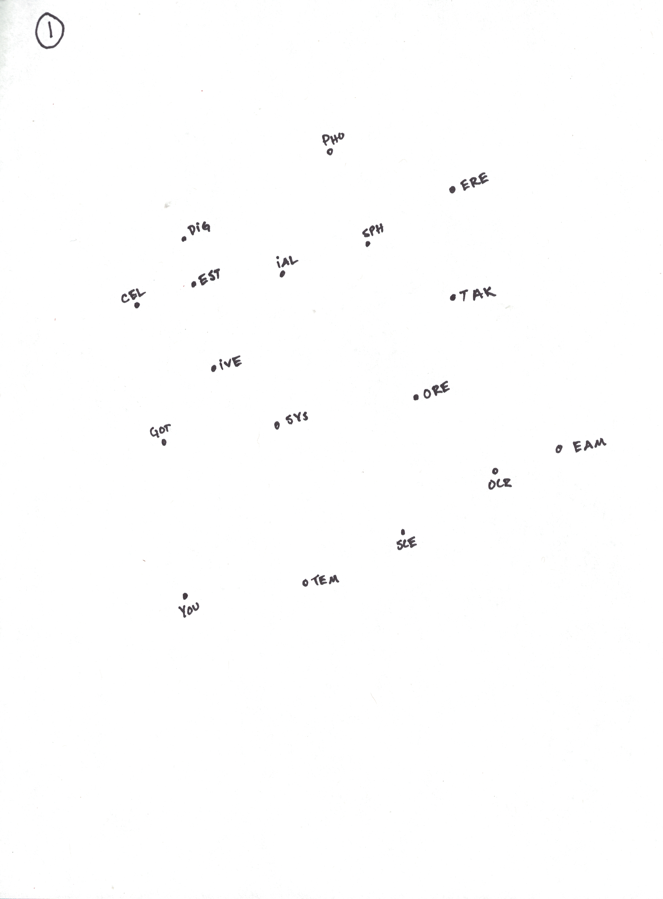
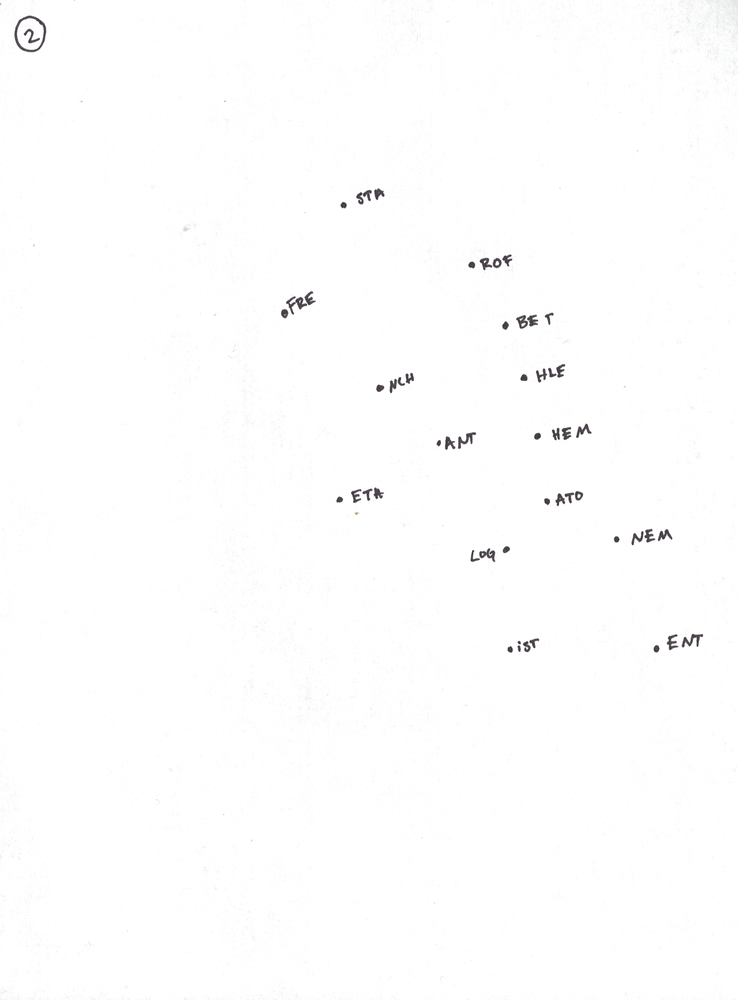
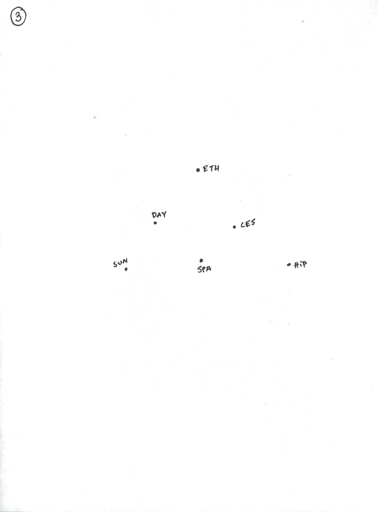
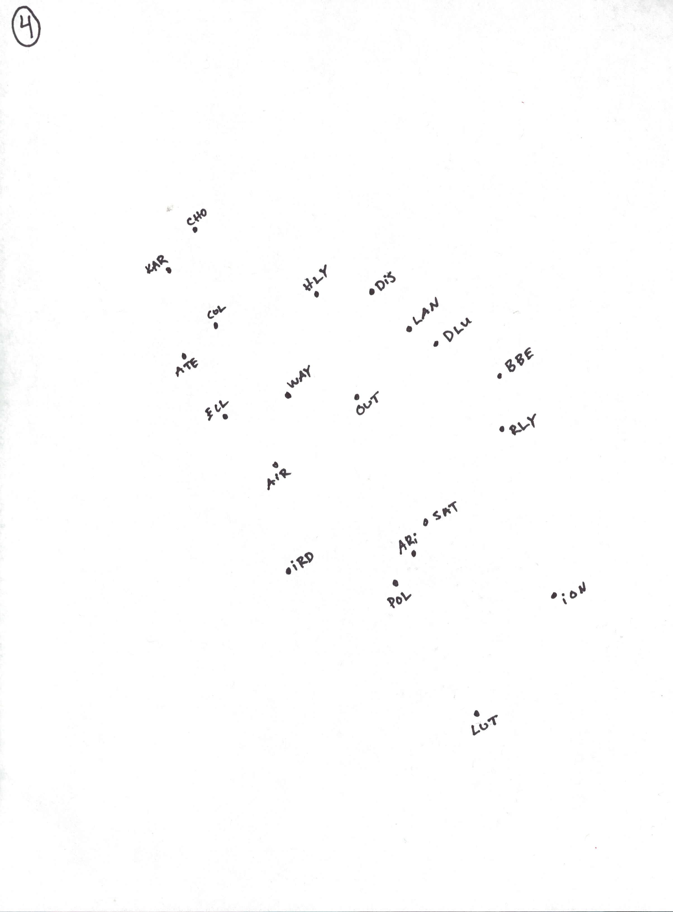
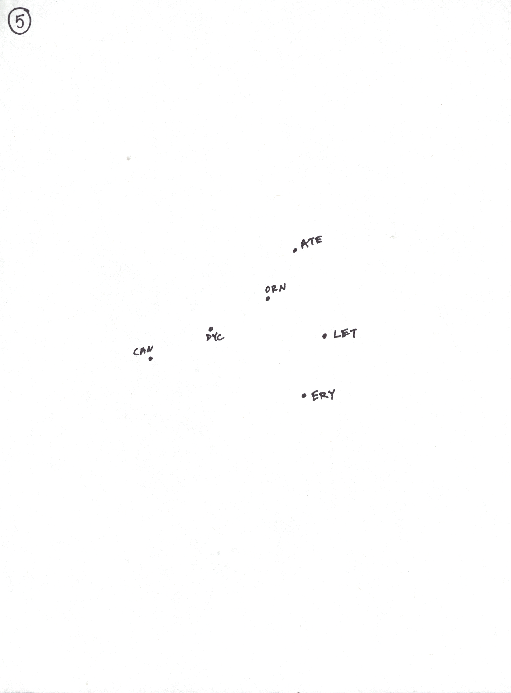
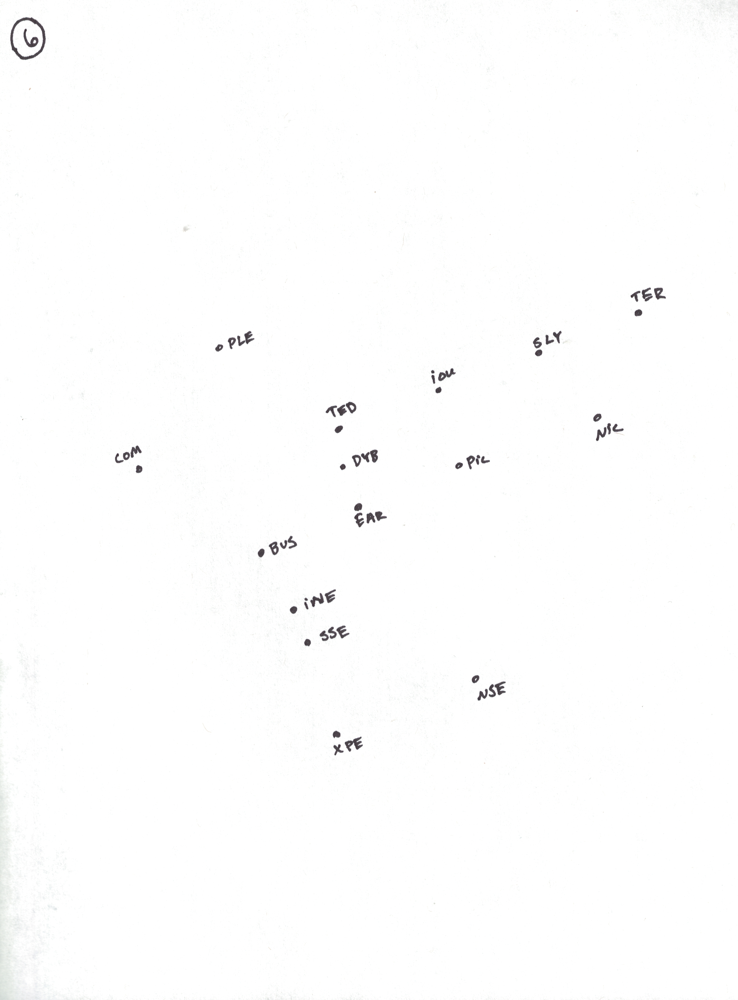

The Moon
- Fancy (6)
- Bernadette's behavior, often (6)
- Controversial Halloween treat (9)
- Where Mommy goes to be alone (6)
- Easter or Palm (6)
- Intergalactic transportation (9)
- Redemption (9)
- La Marseillaise (12)
- Blood doctor (12)
- Shepards' guide (15)
- Song by Marc Antony, Amy Grant, or McFly (9)
- The worst part of the sandwich cookie (for some) (9)
- What the glow-in-the-dark stars on Ethan's ceiling do (12)
- Heavenly body (15)
- What the Frizz investigated in Arnold (15)
- Burned (9)
- Finished (9)
- Mind-numbingly (9)
- Cost of operating (15)
- Secret meeting in the woods (15)
- Esophagus, for one (6)
- Martial art (6)
- Used a chair for longer (6)
- Exit (6)
- Atmospheric impurities (12)
- In the manner of those lacking the flair of pirates at sea (12)
- Impractically fancifully (12)
- Property of some sunglasses (British spelling) (12)
- Choux cream and ganache (15)





